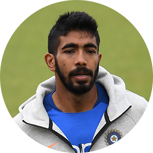

Click On The Image To get Info (KING KHOLI)

- Kohli has never been auctioned in the IPL....
- Most runs in a single IPL season....
- The first cricketer to take a wicket off the 0th delivery in T20Is....
- First Indian batsman to score a century on World Cup debut...
- Kohli the wicketkeeper....
- Only cricketer to score 500+ runs in a bilateral ODI series.
MY FAVORITE WICKET KEEPER
Click On The Image To get Info (M.S DHONI)

- He was very talented as a kid....
- He used to work as a TTE before being on the Indian cricket team....
- He is the most sponsored athlete in India....
- His biography is named M.S Dhoni: The Untold Story.......
- He was the most expensive player in first IPL Auction.....
- Dhoni is the only player to win the ICC Player of the Year award twice.
MY FAVORITE BALLER (SECOND)
Click On The Image To get Info (BUMRAH)

- He is the first Asian bowler to take 5 wickets in a test innings in South Africa, England and Australia during the same calendar year.
- He is also the third highest wicket taker in test matches in a debut year with 48 wickets in 8 matches.